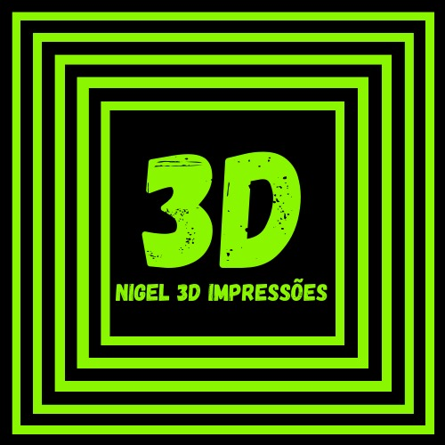

Quem somos
Sou um profissional apaixonado por tecnologia, com uma trajetória que combina experiências diversificadas e um compromisso contínuo com o desenvolvimento pessoal e técnico. Estudei em colégio público durante toda minha vida, o que me proporcionou uma base sólida e resiliente. Minha carreira começou como entregador de farmácia, onde desenvolvi habilidades fundamentais de trabalho e responsabilidade. Posteriormente, atuei como financista no ramo dos investimentos, onde adquiri conhecimentos valiosos sobre gestão financeira. Sempre quis trazer a tecnologia para minha vida, então investi em uma impressora 3D e comecei a trabalhar com vendas e modelagem 3D. Minha paixão por tecnologia me levou a fazer um curso na área de robótica, e fui convidado a ser professor pela unidade onde estudei. Hoje, sou professor de robótica sustentável, transmitindo conhecimentos sobre tecnologias limpas e inovadoras. Além disso, trabalho com máquinas 3D, desde a modelagem até a manutenção, e também com montagem e manutenção de computadores, tanto desktops quanto notebooks. Meu objetivo de carreira é me aprofundar cada vez mais na área da tecnologia. Não pretendo encerrar meu ciclo como professor; quero continuar progredindo, sempre buscando novas oportunidades para aprender e crescer profissionalmente.
